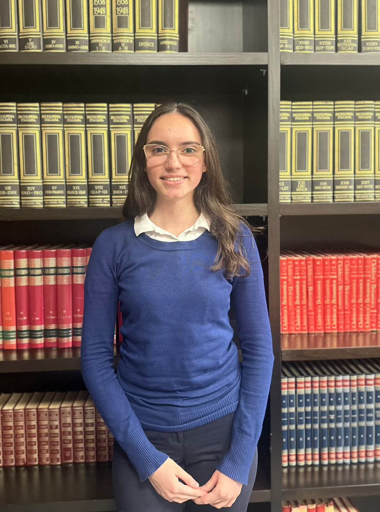

Intervistë me nxënësen e klasës së dhjetë, Klea Ndreca, e cila është renditur e para në konkursin e pranimit të nxënësve për vitin shkollor 2024-2025
•Kur ke dëgjuar për herë të parë për shkollën tonë?
-Për këtë shkollë kam dëgjuar shumë vite më përpara duke qenë se edhe motra ime ka qenë pjesë e kësaj shkolle. Gjithmonë kam pasur një mendim pozitiv pasi ajo vinte gjithmonë me qejf edhe unë isha ajo fëmija i vogël të cilit i tregonte për ditën e saj dhe gjithmonë jam rritur me idenë se një ditë do të shkoj aty dhe do të jetë shumë bukur.
• Tani që je pjesë e kësaj shkolle a ka ndryshuar diçka në opinionin tënd?
- Jo, opinioni im nuk ka ndryshuar. Thjesht ishte pak e vështire përshtatja në fillim, pjesën më të madhe të mësuesve nuk i njihja por të them të drejtën opinioni im nuk ka ndryshuar është po ajo shkollë e bukur që mendoja se do te ishte.
• Si u ndjeve në momentin kur more vesh se kishe marrë pikët më të larta në provimin e pranimit?
-Ishte diçka që nuk e prisja fare. Ai momenti kur po shikoja kodin dhe pashë që isha une nuk e besova në fillim por u ndjeva krenare për veten të them të drejtën.
• Si ndihesh tani që je pjesë e kësaj shkolle?
- Ndihem shumë e lumtur që jam pjesë e kësaj shkolle, që po njoh njerëz kaq të mirë, njerëz që janë kaq të dashur, të afrueshëm. Më pëlqen fakti se kam zgjeruar rrethin tim shoqëror.
• A ke pasur vështirësi me përshtatjen?
-Po, fillimi ishte pak i vështirë por nga java e dytë fillova ta marr veten.
•Çfarë i shkaktoi këto vështirësi?•Çfarë i shkaktoi këto vështirësi?
-Nuk e di, ndoshta ndryshimi dhe fakti që nuk njihja shumë njerëz dhe duke qenë se jam pak tip i mbyllur nuk flisja kur më pyesnin mësuesit ndërsa tani që u njohëm më mire ndihem më e lirë për tu shprehur.
•Si e përjetove ditën e parë të shkollës?
-Ditën e parë të shkollës isha shumë e stresuar mbaj mend që po qëndroja para portës duke pritur të më thirrej emri për te hyrë brenda, edhe në momentin që dëgjova disa emra që ishin në klasë të njohur me mua u gëzova. Të paktën nuk isha edhe aq keq. Edhe mësuesja u tregua shumë e mirë, u ndjeva e mikpritur në klasë, të gjithë ndanë ide edhe un fola pak. Ishte një ditë shumë e bukur, shkova në shtëpi e kënaqur edhe mezi po prisja të vija edhe ditët e tjera.
• Kush është shoku apo shoqja jote e pare në klasë?
-Është një vajzë që është shoqja ime e ngushtë të cilën e takova edhe në klasë dhe ka qenë mbështetja ime më e fortë dhe është fat për mua që është në të njëjtën klasë me mua sepse edhe gjatë gjithë 9- vjeçares kemi qëndruar së bashku dhe prania dhe mbështetja e saj më ka ndihmuar shumë gjatë fillimit të shkollës edhe vazhdon akoma.
•A ke ndonjë strategji të veçantë apo ndonjë sekret tëndin për të mësuar më shumë me qenë se ke dalë e para besoj se do të kesh një lloj sekreti në mënyrën se si ti i përvetëson njohuritë.
-Të them të drejtën, duke mësuar gjatë gjithë vitit, nuk është se ndalem vetëm tek ato ditët e fundit për tu përqendruar shumë. Mendoj se ajo që ka ndikuar më shumë ditën e provimit është se kam hyr me vetëbesim dhe u ndjeva shumë mirë edhe vetë dhe mendoj se ishte kryesorja. Pashë të tjerë që u bllokuan por unë ato njohuri që dija ato shkruaja edhe vetëbesimi mendoj se ishte faktori kryesor.
• Cilat janë disa nga talentet apo lëndët e tua të preferuara?
-Për sa i përket lëndëve të preferuara më pëlqen shumë anglishtja dhe matematika të cilat janë edhe lëndët te të cilat jam më mirë, ndërsa për sa i përket talenteve nuk është se kam zhvilluar por me pëlqen piktura.
•Kush janë kujtimet e tua më të veçanta nga 9-vjeçarja?
- Gjatë 9-vjeçares jam përqendruar më shumë te mësimet dhe e kam lënë pak pas dore pjesën e shoqërisë por tani kuptoj se ato momente që kaloja me shoqërinë janë ato që mbaj mend më shumë.
• Kush është momenti më i veçantë?
-Momenti më i veçantë është kur u bëmë bashkë për konkursin e gjuhës shqipe dhe fituam vendin e parë, kur mblidheshim duke diskutuar për temat që do të trajtoheshin dhe i kalonim me të qeshur dhe pozitivitet dhe me vonë ashtu e fituam edhe vendin e parë.
•A keni kohë të lirë gjatë ditës, nëse po si e shpenzoni atë?
-Në kohën e lirë mua me pëlqen të shoh filma, të lexoj libra dhe të kaloj kohë me vëllain tim të vogël. Duke qenë se motra ime e madhe nuk më ka kushtuar shumë vëmendje dëshiroj që vëmendjen që më ka munguar t’ia kushtoj vëllait më pas librave dhe filmave. Librat duke qenë se kam edhe gjyshin autor dhe jam rritur me idenë se letërsia është e bukur, është kryesore. Kurse filmat janë thjesht hobi i imi.
• Cilat janë disa nga qëllimet që i ke vendosur vetes për këto vite?
-Qëllimi im për këto vite, përveç rezultateve të mira në mësime, është të arrij të zgjeroj rrethin tim shoqëror, të bëhem person më social dhe të njoh më shumë veten.
•Cilat janë ëndrrat e tua pas gjimnazit?
-Ëndrra ime është të kem një profesion që me te vërtetë dua ta ushtroj për shembull siç është mjekësia sepse jam rritur me idenë se do te jem mjeke në të ardhmen.
•Cili është person që ju frymëzon me shumë në jetën tuaj?
-Personi më frymëzues dhe mbështetës për mua është mami e cila gjithmonë më ka mbështetur, më ka thënë që “do ia dalësh”,”ki besim te vetja””unë e di se ti mundesh” dhe gjithmonë më ka shtyrë ajo ideja që me çdo hap timin të bëj mamanë krenare.
•A mos ndoshta kjo është më shumë si një lloj përgjegjësie që të është dhënë?
-Jo, e ndiej vetë që duke e parë atë të lumtur edhe unë jam më e lumtur dhe nuk e shoh si përgjegjësi.
• Si mendon se do të ndikojë prania në këtë shkolle në zhvillimin tënd akademik?
-Mendoj se duke punuar fort dhe me ndihmën e shkollës do të arrij qëllimet e mia për sa i përket asaj çfarë unë dua të bëhem në të ardhmen.
• Cili është mesazhi që do u jepje lexuesve të gazetës së shkollës sonë të cilët dëshirojnë të bëhen pjesë e shkollës? A do ua sugjeroje?
-Po sigurisht që do ua sugjeroja pasi këtë shkolle e zgjodha vetë si më të mirën për mua dhe do t’iu sugjeroja që të mos dorëzohen dhe të punojnë fort sepse vetëm kështu mund ta arrijnë atë që duan.